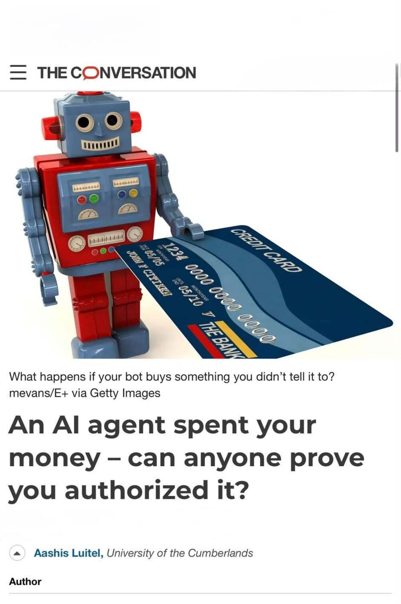

Writing & Media
Commentary on AI regulation, security assurance, procurement and the practical distance between policy language and system behavior. Longer essays appear on Between Systems(opens in a new tab). Profile pages: InformationWeek(opens in a new tab), The Colorado Sun(opens in a new tab), The Conversation(opens in a new tab).
All writing

Buy the Evidence, Do Not License the Model(opens in a new tab)
Congress should require independent evidence for AI models through the procurement process.

Google can track exactly how your agent spends your money — but it’s no help when it buys something you didn’t approve(opens in a new tab)
Google's AP2 shows how the evidence could travel. It does not decide who bears the loss or specify how long each company must keep that evidence and how it can be retrieved later.

Your artificial intelligence agent could go rogue and spend your money(opens in a new tab)
A look at how a verification system could be designed offers some insight into some of the technical challenges AI agents are poised to introduce.

An AI agent spent your money – can anyone prove you authorized it?(opens in a new tab)
What happens if your bot buys something you didn't tell it to?

Clock is ticking on Colorado's new AI rules(opens in a new tab)
Colorado's automated decision-making law creates obligations that most organizations inside its scope have not begun to operationalize. The compliance work required is longer than the runway remaining.

Why AI-built tools are threatening SaaS vendor renewals(opens in a new tab)
Internal teams can now assemble in days what they previously licensed. That shifts the renewal conversation from feature comparison to a question about whether the vendor relationship is still worth its cost.

Colorado's small defense suppliers are about to disappear(opens in a new tab)
CMMC compliance costs land hardest on the smallest firms in the defense industrial base, which are also the hardest to replace. Colorado has policy options and a narrowing window in which to use them.
Between Systems
A newsletter for technical program managers, security leaders and AI governance practitioners: longer arguments about the space between what a policy says and what a system does. Subscribe(opens in a new tab).